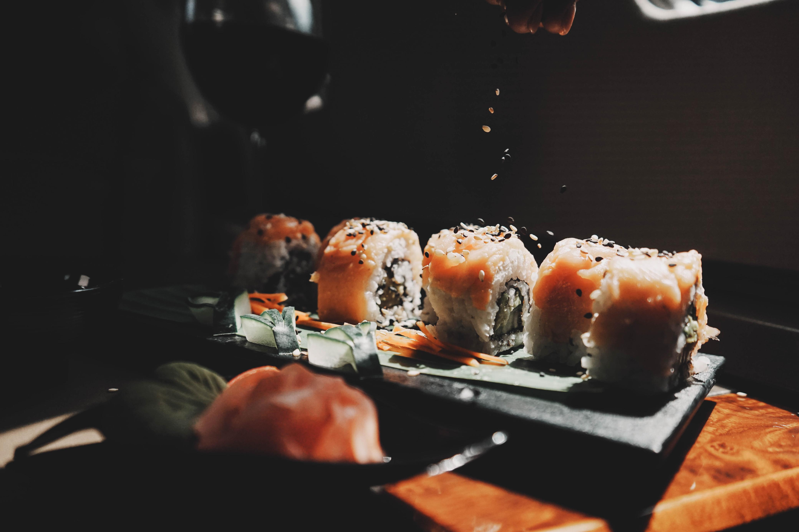

De Xalapa a los cielos de México
Comexa nace originalmente como un restaurante de fina cocina mexicana en la ciudad de Xalapa, Veracruz. Ante la necesidad de servicio de alimentos para la aviación ejecutiva regional, en 1995 se crea el servicio de catering.
Posteriormente, Comexa inicia operaciones en el aeropuerto de Toluca, cubriendo las necesidades de la mayor flota de aviones ejecutivos en México y ofreciendo un servicio de catering V.I.P. a los clientes más selectos y exigentes.
Con más de 20 años de experiencia, Comexa sigue contando con la preferencia de muchos de sus clientes originales, además de ofrecer servicio a vuelos diplomáticos y aviones con matrícula extranjera. Nuestro menú ofrece la mejor selección de alimentos: internacionales, kosher, light, vegetariano, entre otros.
